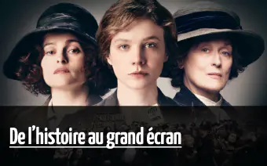
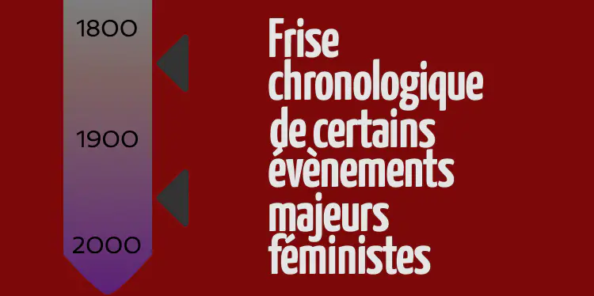
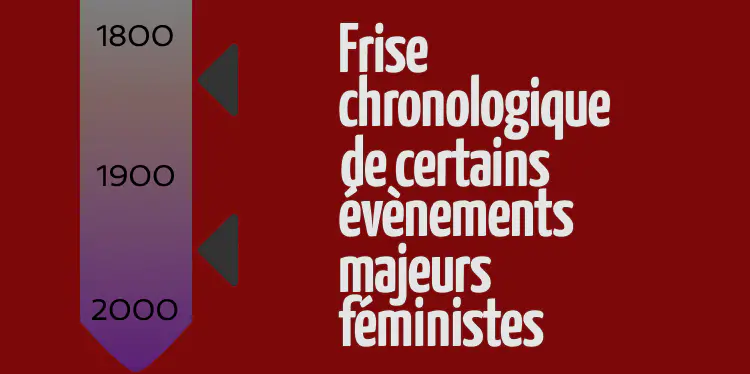

Les suffragettes, une histoire de droit de vote
Les suffragettes sont les membres de l’organisation britannique Women’s Social and Political Union (WSPU). Une organisation créée en 1903 pour revendiquer le droit de vote de femmes au Royaume-Uni. En effet au Royaume-Uni les femmes n’ont obtenu le droit de vote qu' en 1928. Ce qui est bien plutôt que la France qui ne l'a autorisé qu’en 1944. Mais également plus tard que certains pays comme le Danemark, qui l'a autorisé en 1915, ou l’Allemagne, en 1918.
Emmeline Pankhurst la révolutionnaire

Emmeline Pankhurst

L’organisation Women’s Social and Political Union a été fondée à Manchester par les femmes de la famille Pankhurst. Emmeline Pankhurst, la mère, et ses 3 filles Christabel, Sylvia et Adela Pankhurst. Emmeline décide de créer la WSPU après avoir été témoin de plusieurs actions du National Society for Women's Suffrage qui n’ont abouti à aucun changement majeur. Le but du WSPU est donc de passer à l’action de façon beaucoup plus directe. Leurs actions commencent en 1905. Christabel, l’une des filles de Emmeline, et Annie Kenney qui vont manifester lors d’une réunion du Parti Libéral. Les 2 femmes sont alors arrêtées pour avoir scandé des slogans féministes lors de la réunion. Les membres du WSPU continuent ensuite leurs actions. Le 21 juin 1908, 200 000 personnes, dont 50 000 femmes en robe blanche, se réunissent à Hyde Park pour manifester pour le droit de vote des femmes. Malheureusement rien ne change. Les Suffragettes ont alors continué leurs actions pour le changement. Elles se sont également enchaînées au portail du Parlement, elles ont effectué des grèves de la faim, etc ...Mais le gouvernement reste aveugle et n’accepte aucune des requêtes du WSPU.
Photo de la manifestation de Hyde Park
Un combat mal engagé
Cependant après plusieurs années de combat ne menant à aucun résultat les Suffragettes commencent à perdre des militantes. D’une part à cause de la déception causée par le manque de résultat, mais également car elles ne sont plus en accord avec les méthodes de Emmeline Pankhurst jugées trop violentes. C’est en 1907 Teresa Billington Greig crée le Women's Freedom League (WFL), une organisation politique ayant le même but que le WSPU. Seulement le WFL effectue des actions plus pacifistes comme ne pas payer leurs impôts ou ne pas participer au recensement. Le WSPU, le WFL ainsi que d'autres organisations et militantes continuent leurs actions. De plus en plus de Suffragettes sont arrêtées par la police mais cela ne les freine pas. Au contraire, elles utilisent la médiatisation de leurs procès pour diffuser leurs idéaux dans toute la Grande Bretagne.

Un groupe de suffragettes devant le tribunal de la police
Les Suffragettes poursuivent leurs actions comme des grèves de la faim, des manifestations, etc … La police répond de plus en plus agressivement. À tel point que la sœur de Emmeline Pankhurst, Mary Jane, a été mortellement blessée par les forces de l’ordre le jour de Noël 1910. Les Suffragettes vont même finir par abandonner les actions pacifiques. En mars 1912 elles brisent toutes les vitrines des rues de l’Ouest de Londres. En 1913, alors que Christabel, la sœur de Emmeline, a fui en France et que leur mère est en prison, Christabel essaie de remettre une pétition au roi, elle est arrêtée, le WSPU devient alors clandestin.
La victoire tant attendue
En 1914 la Première Guerre mondiale commence. Emmeline propose donc un marché. En échange de la libération de toutes les Suffragettes, elles participeront à l’effort de guerre en travaillant dans les usines, le marché est accepté. Des soldats commencent à revenir en 1916, des soldats qui sont pour le droit de vote. Ayant combattu pour leur pays, le gouvernement ne peut pas leur refuser. Les militantes continuent d’agir pour le mouvement et à faire pression. Le gouvernement comprend alors qu’il faut accorder aux femmes ce qui est accordé aux hommes. En 1918 le Representation of the People Act est voté. Cela permet aux femmes de plus de 31 ans avec un mari inscrit sur les listes de vote et propriétaire de voter, et aux hommes de plus de 21 ans. Cela représente 6 millions de femmes qui ont à présent le droit de vote ! Le réel droit de vote pour toutes les femmes de plus de 21 ans est voté en juillet 1928. Ce fut un combat de 25 ans pour Emmeline Pankhurst et le WSPU, mais le combat avait déjà commencé avant et à duré 60 longues années.

La Representation of the People Act
Lire aussi

 

Voir plus ...